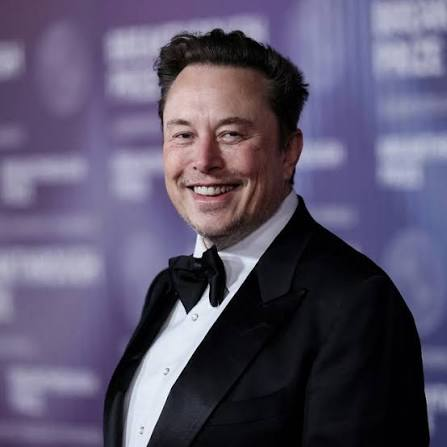
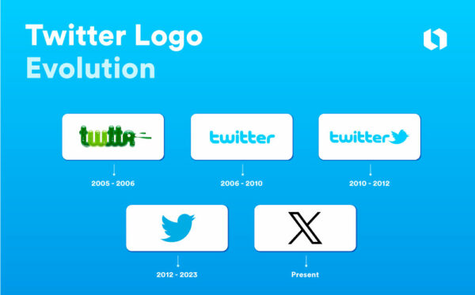

Historie sociální sítě
Twitter (dnes X)
Digitální náměstí a okamžitý tep světového dění

- Rok založení
- 2006
- Zakladatelé
- Jack Dorsey, Biz Stone, Evan Williams a Noah Glass
Vývoj loga Twitteru a X

Od nápadu k celosvětové síti
Twitter vznikl v březnu 2006 jako projekt v podcastové společnosti Odeo. Původně se jmenoval „twttr“. Krátké zprávy připomínaly SMS, a proto měly zpočátku limit 140 znaků. První příspěvek odeslal Jack Dorsey 21. března 2006: „just setting up my twttr“ („právě si nastavuji svůj twttr“).
Krátké zprávy a veřejné konverzace
Twitter vyrostl z interního nápadu na službu, kde mohl uživatel posílat krátké aktuality svým kontaktům. Původní limit 140 znaků souvisel s délkou SMS zpráv a dal vzniknout úspornému stylu psaní. Příspěvky se řadily do veřejného proudu, který bylo možné sledovat i mimo okruh osobních přátel.
Hashtagy pomohly seskupovat příspěvky podle témat a zmínky pomocí zavináče usnadnily přímé zapojení dalších účtů do diskuse. Retweety zavedly jednoduchý způsob šíření cizích zpráv. Díky těmto prvkům se služba rychle uplatnila při živém komentování událostí, v politice, žurnalistice i zákaznické podpoře.
Od Twitteru k platformě X
V dalších letech přibyly fotografie, video, živé vysílání, soukromé zprávy a později také audio konverzace Spaces. Z původního textového mikroblogu se stal mnohem širší komunikační produkt. Po převzetí společností Elona Muska v roce 2022 následovaly výrazné změny vedení, pravidel, ověřování účtů a obchodního modelu.
V roce 2023 se název Twitter změnil na X a modrého ptáka vystřídal minimalistický znak X. Přechod ukázal, jak obtížné je změnit značku, která se stala součástí běžného jazyka. Služba si zachovala veřejný proud příspěvků, zároveň však čelí debatám o moderování, důvěryhodnosti informací, bezpečnosti a proměně své komunity.
Klíčové milníky
-
2006 · První příspěvek
Jack Dorsey zveřejnil první zprávu na službě, která se brzy stala místem pro krátké veřejné aktuality.
-
2007 · Hashtagy
Uživatelé začali označovat témata znakem #. Zvyk se rozšířil napříč platformou i dalšími sociálními sítěmi.
-
2017 · Limit 280 znaků
Twitter zvýšil délku příspěvku z původních 140 na 280 znaků.
-
2022 · Změna vlastníka
Elon Musk dokončil převzetí společnosti za 44 miliard dolarů. Následovala rozsáhlá reorganizace firmy a změny platformy.
-
2023 · Přejmenování na X
Služba Twitter byla přejmenována na X a její známé krátké příspěvky dostaly nové označení „posts“.
Vliv na společnost
Twitter, dnes X, umožňuje sdílet zprávy a komentáře v reálném čase. Stal se důležitým prostorem pro politiku, žurnalistiku i popkulturu a pomáhá informacím rychle se šířit po celém světě.